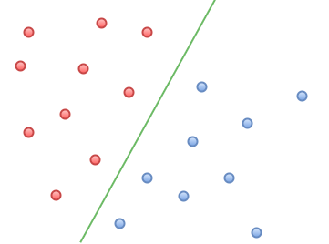

“Support Vector Machine” (SVM) refers to a supervised machine learning algorithm which can be used for both classification or regression challenges.1
Consider an n-dimensional space.
Support vectors refer to the individual co-ordinates in the space, and are the data points collected by individual observation.
'n' refers to the number of features which each data point would have.
The support vector machine is the hyper-plane that divides the space and separates the data points into classes.1
What is a CNN?
“Support Vector Machine” (SVM) refers to a supervised machine learning algorithm which can be used for both classification or regression challenges.1
Convolutions
A convolution is a mathematical operation on two functions to produce a third function which is seen as a modification of one of the first functions, giving the integral of the pointwise multiplication of the two functions as a function of the amount that one of the original functions is translated. 2
Convolution is defined as: $$ (f * g )(t) = \int_{0}^{t} f(\tau)\, g(t - \tau)\, d\tau\ \mathrm{for} \ \ f, g : [0, \infty) \to \mathbb{R} $$ where \( (f * g )(t) \) represents the convolution of \(f\) on \(g\). For discrete functions this is analogous to: $$ (f * g)[n]\ \stackrel{\mathrm{def}}{=}\ \sum_{m=-\infty}^\infty f[m]\, g[n - m] $$
What is a CNN?
“Support Vector Machine” (SVM) refers to a supervised machine learning algorithm which can be used for both classification or regression challenges.1
Consider an n-dimensional space.
Support vectors refer to the individual co-ordinates in the space, and are the data points collected by individual observation.
'n' refers to the number of features which each data point would have.
The support vector machine is the hyper-plane that divides the space and separates the data points into classes.1
How does a CNN performs classification?
- The goal of support vector machines is to find the hyper-plane (or function) that:
- separates the two classes (benign tumours and malignant tumours)1
- maximises the distances between nearest data points (from either class) and itself1
- correctly classified unseen examples2
How do they work on linearly separable classes?
If the classes are linearly separable, then there must exist a linear hyper-plane that divides the classes accurately.
The task therefore its to find this linear optimal separating hyper-plane.
The linear hyper-plane will have the form:
- Where:
- is the input vector (the features)
- is the weight vector (that applies weight to each feature)
- is the bias (translates the hyper-plane)

Using CNN's for multiple object classification
When the classes are non-linearly separable, a kernel is used.
A kernel is a mathematical function that transforms a low-dimensional input space into a high-dimensional space, allowing classes to become linearly separable.
Once the input data has been transformed, the SVM can be trained in the same way as linearly-separable classes.1
Kernels often used for MRI brain tumour classification include 2:
The choice of kernel is not obvious, and so determining the optimal hyper-plane involves testing with different kernels.

What features do we extract from MRI images?
One images have been pre-processed, the next step is to extract numerical features. The choice of numerical features are important as they will determine the success of any machine learning model.
- Features can be grouped into:
- Grey-scale features: these include mean, variance, standard deviation, skewness and kurtosis
- Texture-features: these include entropy, dissimilarity, inverse, energy, contrast and IDM
- Symmetric feature: the exterior symmetry
How do SVMs perform at classifying MRI brain images from MRI images?
- Across papers referenced, SVMs have been used in classifiying:
- Normal vs Abnormal MRI brain images
- Benign vs Malignant MRI brain tumour images
- Low grade glioma vs High grade glioma MRI brain tumour images

Hello there


Footnotes
- [1] WHO Glioma grades
- [2]https://en.wikipedia.org/wiki/Convolution
- [3]The Royal Marsden Manual of Clinical Nursing Procedures, 9th, Professional Edition L Dougherty and S Lister (Editors) Royal Marsden Manual Series, Wiley-Blackwell, 2015
- [4]https://assets.thebraintumourcharity.org/live/media/filer_public/b3/56/b356a660-9860-409d-9199-ee5419f743c4/glioblastoma-v1-adult-factsheet.pdf
- [5]Odland A, Server A, Saxhaug C, Breivik B, Groote R, Vardal J, Larsson C, Bjørnerud A. Volumetric glioma quantification: comparison of manual and semi-automatic tumor segmentation for the quantification of tumor growth. Acta Radiol. 2015;56:1396–1403. doi: 10.1177/0284185114554822. [PubMed] [Cross Ref]]
- [6]Aslian H, Sadeghi M, Mahdavi SR, Babapour Mofrad F, Astarakee M, Khaledi N, Fadavi P. Magnetic resonance imaging-based target volume delineation in radiation therapy treatment planning for brain tumors using localized region-based active contour. Int J Radiat Oncol Biol Phys. 2013;87:195–201. doi: 10.1016/j.ijrobp.2013.04.049.
- [7]BRATS dataset
- [8]Radiology Masterclass https://www.radiologymasterclass.co.uk/tutorials/mri/mri_sequences
- [9] http://ieeexplore.ieee.org/document/6975210/